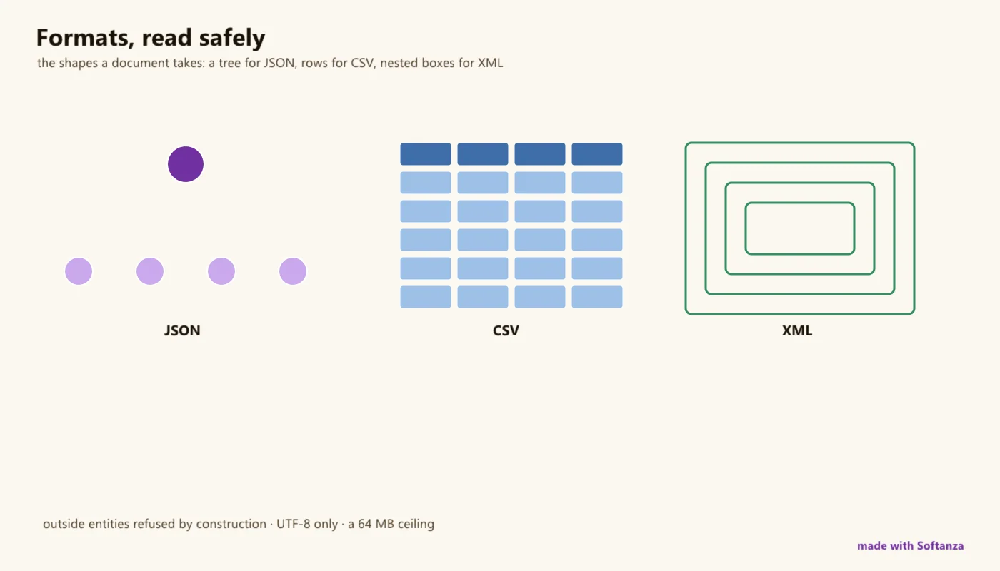

Fichiers et formats
La sûreté d'abord : XXE fermé par construction ; des sous-ensembles délibérés (HTML plat, zip seul, UTF-8, plafond de 64 Mo).
1 Strong · 6 Solid · 4 Partial · 1 Emerging
Mesuré contre : lxml · libarchive · Dossiers : base/file(s'ouvre dans un nouvel onglet) · base/archive(s'ouvre dans un nouvel onglet) · base/html(s'ouvre dans un nouvel onglet) · Le guide des fonctions de ce domaine

Repensé depuis les premiers principes
Ce que Softanza a gardé de ce qui marche, et ce qu'elle a repensé, tel que la bibliothèque l'a écrit dans ses documents de conception et ses narrations.
La manière SoftanzaOn aborde un fichier selon ce qu'on veut en faire, et chaque format est analysé une seule fois, dans le moteur, par un analyseur dont les refus font partie de la sécurité.
Gardé des meilleures pratiques
- La forme canonique XML est comparée octet par octet à libxml2 sur dix vecteurs, gardés comme tests permanents. Une référence indépendante juge le code, pas sa propre parole. source(s'ouvre dans un nouvel onglet)
- La lecture rend la valeur, pas le texte brut : & revient en &. L'appelant ne décode jamais à la main, donc rien n'est affiché brut ni échappé deux fois. source(s'ouvre dans un nouvel onglet)
- Une classe par format, pas par source. JSON, CSV, HTML et XML prennent du texte ; un fichier est une source, pas un genre, et charger ou enregistrer reste une commodité. source(s'ouvre dans un nouvel onglet)
Repensé
- Un fichier s'ouvre par intention, pas par mode : FileRead, FileAppend, FileCreate, FileOverwrite, FileUpdate. Chaque intention permet aussi de lire, comme un cahier ouvert. source(s'ouvre dans un nouvel onglet)
- L'analyseur XML refuse toute déclaration DOCTYPE ou ENTITY avant d'analyser. La lecture de fichiers piégée et l'explosion mémoire sont exclues par construction, pas par un réglage oubliable. source(s'ouvre dans un nouvel onglet)
- Les chemins XML n'ont que trois formes, et comparent les noms locaux. Un XPath partiel inviterait des requêtes qui échouent en silence ; un préfixe n'est qu'un surnom local. source(s'ouvre dans un nouvel onglet)
- Une clé de stockage d'objets n'est pas un chemin. Chaque fichier porte le SHA-256 de sa clé : la traversée de chemin devient inexprimable et Photo.JPG reste distinct de photo.jpg. source(s'ouvre dans un nouvel onglet)
A competent, safety-first formats module -- engine-backed file I/O, directories (with the Windows non-ASCII listing bug defeated), CSV, JSON, and a namespace-aware XML parser -- whose one genuine standout is XML security: XXE is closed by construction, the parser refusing <!DOCTYPE> and <!ENTITY> outright, which lxml and most XML libraries get wrong by default. Everything else is a deliberate subset: no XPath/XSLT/validation, a flat HTML index, zip-only archives via Haro's minizip, UTF-8 only, and whole-file reads with a 64 MB cap.
Ce qu'un maker en fait, et ce qui se distingue
- XXE closed by construction: the parser refuses <!DOCTYPE> and <!ENTITY>, a posture lxml defaults to wrong
- The Windows non-ASCII directory listing bug defeated (wide-W API to UTF-8)
- One strict namespace-aware XML parser shared with XML digital signatures (SAML), with exclusive C14N
- CSV eval() on list-looking cells removed; byte-scan number test ~156x faster than regex-per-cell
Ce qui est dû
- Migrate the stzJson constructor to the fixed UTF-8 parser (shipped but unwired)
- Streaming and large-file reads past the 64 MB cap; iterparse-style XML/JSON
- A real archive layer (tar, gzip/zlib); charset detection and non-UTF-8 decoding
- Multiline CSV, richer HTML (slice 3), XPath, a pathlib-style path surface
La manière Softanza, exécutée
Ce que Softanza fait autrement dans ce domaine, montré par du code tiré de ses narrations et de ses gardes, et exécuté pour cette page.
Tout document portant une déclaration DOCTYPE ou ENTITY est refusé avant même l'analyse.
? StzXmlIsValid("<!DOCTYPE d [<!ENTITY e SYSTEM 'file:///etc/passwd'>]><d/>")
? StzXmlIsValid("<!ENTITY xxe SYSTEM 'file:///etc/passwd'><d/>")0 0
exécuté le 2026-10-01 21:18 dans la bibliothèque au commit 0e72e2e2c ; tiré de base/doc/narrations/stz-xml-the-parser-that-says-no.md(s'ouvre dans un nouvel onglet)
Trois formes de chemin, comparées sur le nom local, lisent un document doté d'un espace de noms sans jamais le nommer.
cXml = '<library xmlns="urn:lib" name="City Library">' +
'<book isbn="1"><title>Dune</title><year>1965</year></book>' +
'<book isbn="2"><title>Ubik</title><year>1969</year></book>' +
'</library>'
? StzXmlRoot(cXml)
? StzXmlGet(cXml, "library/book/title")
? StzXmlGet(cXml, "library/book[2]/title")
? StzXmlGet(cXml, "//year")library Dune Ubik 1965
exécuté le 2026-10-01 21:18 dans la bibliothèque au commit 0e72e2e2c ; tiré de base/doc/narrations/stz-xml-the-parser-that-says-no.md(s'ouvre dans un nouvel onglet)
Deux clés qui ne diffèrent que par la casse restent deux objets, même sur un disque insensible à la casse, car chaque fichier stocké est nommé par une empreinte de sa clé.
oB = StzFileBlobStoreQ("uploads")
oB.Save("Photo.JPG", "the original")
oB.Save("photo.jpg", "a different picture")
? oB.NumberOfBlobs() # --> 2
? oB.Fetch("Photo.JPG") # --> the original
? oB.Fetch("photo.jpg") # --> a different picture2 the original a different picture
exécuté le 2026-10-01 21:18 dans la bibliothèque au commit 0e72e2e2c ; tiré de base/doc/narrations/stz-service-virtualization-code-first-subscribe-later.md(s'ouvre dans un nouvel onglet)
Les couloirs, un par un
Les couloirs et leurs notes sont cités tels qu'ils ont été lus à la source, le Read from the source on 2026-09-16, from a read-only main worktree.